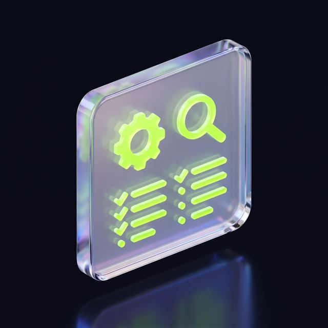
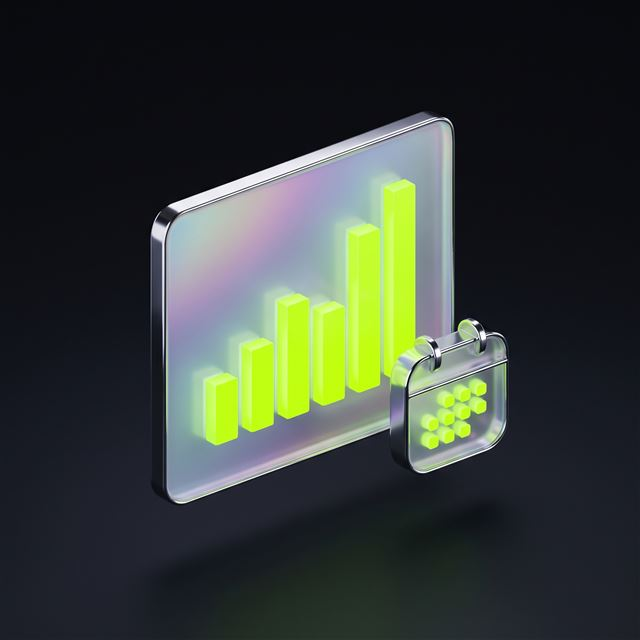

SEO Services: Sustainable Visibility in Search
TECHNICAL SEO · CONTENT STRATEGY · LOCAL SEO · MULTILINGUAL / E-COMMERCE SEO
The right SEO agency treats your site as a digital asset that keeps growing, not as a one-off project. The TasarımMania SEO Services module covers your search engine performance end to end: from the technical foundation to content planning, from local visibility to multilingual store optimization. The aim is a lasting position, built through measurable progress month by month and transparent reporting.
sitemap.xml ✓
canonical ✓ · hreflang ✓
↑ PRESS — ITS COUNTERPART LIGHTS UP IN THE RANKINGS LAYER
- audit_complete
- keyword_up
Progress is reported month by month; measurement, not guarantees.
The technical work, the content and the tracking are set up together; rankings aren't left to chance.
and setup
band
results
report
What this service covers: technical, content, local and multilingual SEO
SEO work runs on four main axes, and each one feeds the others. Content won't rank without a sound technical foundation, and international or e-commerce growth is risky before the local groundwork is laid.
Technical SEO
Clearing up the foundation so search engines can crawl your site without errors and index it quickly.
- Site speed and Core Web Vitals measurement
- Crawlability audit: sitemap, robots.txt, redirect errors
- Search Console integration and index monitoring
- Mobile compatibility and structured data checks
Content Strategy
A content calendar built on keyword research and aimed at sales.
- Sector-specific keyword and search intent analysis
- SEO-friendly blog and service page planning
- Identifying gaps in competitors' content
- Updating existing content and structuring internal links
Local SEO
District-level visibility for businesses with a branch or a service area.
- Google Business Profile setup and optimization
- District and area-level local keyword work
- Local directory listings and address consistency
- A recommended process for managing customer reviews
Multilingual SEO
Language and country configuration for sites opening up to more than one market.
- hreflang and language/country configuration for site translation
- Multilingual sitemaps and indexing checks
- Targeting overseas markets
- The ccTLD / subdirectory decision
E-commerce SEO
An optimization layer built for the store platform itself.
- Technical settings specific to platforms like Shopify and ikas
- SEO-friendly structure on product and category pages
- Preventing duplicate content (product descriptions)
- Managing the platform's constraints
Let's work out your site's priority, togetherFive steps, two minutes. The scope and budget band appear on screen.
SEO costs in 2026: an audit in month one, a monthly band after that
This is an ongoing service: the first month covers the technical audit and setup, after which the monthly SEO service runs on a band; the first measurable results usually appear within 8–12 weeks. What sets the band:
- SEO is a continuous service, not a one-off
- The first month goes on a thorough technical audit and setting up the foundation
- After that, the work continues on a monthly cycle
- The price is set by the size of the site, the competition and the number of target markets
- Results appear gradually and cumulatively
We don't guarantee rankings — we've explained why below. We start the conversation by mapping the scope. The basic rules of search can be read at first hand in Google's own starter guide .
What's included, what isn't?
Included in the price
- Monthly technical SEO checks and error tracking
- Keyword and content planning
- Google Business Profile management
- Monthly performance and ranking report
- Search Console and analytics monitoring
- Competitor analysis updates
- A monthly advisory and recommendations call
Separate line item
- The cost of writing blog and content copy
- Paid advertising management (the Meta & Google Ads module)
- Professional translation for translating the site
- A full site refresh or redesign
- Third-party premium SEO tool licences
See your site's band on screenOnly your name and phone number are required.
Let's be clear from the start: there's no such thing as guaranteed SEO
Treat any promise of “guaranteed first place” or “guaranteed SEO” with caution. No agency can control Google's ranking algorithm; anyone claiming otherwise either doesn't know or is misinforming you. Instead of a guaranteed outcome, the basis is a regular, measurable progress report and a transparent method. Results promised quickly rarely last.
Frequently asked questions: SEO timelines, costs and guarantees
The questions that come up most, with short answers.
What exactly does the SEO service cover?
It covers the technical foundation, content, local visibility and, where needed, multilingual optimization.
The work runs on four main axes: technical SEO, content strategy, local SEO and multilingual/e-commerce optimization. The priorities are settled by the audit carried out in the first month.
How long does SEO work take to show results?
Results appear over months rather than weeks, and they build gradually.
Unlike advertising, SEO is cumulative work. The first month is the audit and setup, after which the monthly work continues and the effects become clearer over time.
Is the promise of guaranteed SEO realistic?
No; no agency can control Google's ranking algorithm.
“Guaranteed first place” is marketing hyperbole; instead we share the method we apply openly and show the progress concretely in monthly reports.
How is the monthly SEO service run and reported?
Each month the planned work is carried out and a performance report is shared.
After the first month's audit and setup, the process continues on a monthly cycle; a ranking and traffic report is sent at the end of each month.
What's the difference between SEO and SEM (paid search), and should they run together?
SEM brings immediate paid traffic, SEO builds lasting organic visibility; together they're strong.
SEM delivers traffic for as long as you fund it; when the budget stops, so does the effect. SEO builds organic visibility that accumulates over time and stays.
What sets SEO service prices?
It varies with the size of the site, how competitive the sector is and how many markets are being targeted.
The monthly SEO service runs on a band set by the factors described in the pricing section ; it's settled after the audit, according to the number of pages and how competitive the field is.
Does district-level (local) SEO really work?
For businesses with a physical branch or a service area it's highly effective.
Most people add their district or city to the query when they search for a service. Optimizing the Google Business Profile lifts visibility noticeably for local businesses.
Is SEO handled differently on hosted platforms like Shopify or ikas?
Yes; the technical constraints and settings specific to those platforms are taken into account.
Hosted e-commerce platforms have their own technical limits; URL structure and speed settings are managed platform by platform and treated as a separate strand of work.
Other modules
Web Design & Software The ground the other four modules stand on. Mobile Apps iOS and Android; a shared API and design system with the web. Meta & Google Ads The accounts are in your name; we build the pages the ads land on. Video Production Ad, Reels and product video from a single shoot.If you'd like to look before deciding
What makes the first month different, reporting, sectors and contract terms — all here. Open it, read it, close it.
Why does the first month work differently?

The first month is the technical audit and setup that comes before the monthly work. Your site's priorities are settled during it, and the following months' plan is built on that.
How does reporting work?

At the end of every month we share a clear performance report covering rankings, traffic and the work completed.
Which sectors is it suitable for?
It's applied across a wide range, including corporate sites, service businesses, e-commerce stores and multi-branch local businesses.
How long is the contract?
Because SEO is cumulative work, a short-term contract isn't advisable; the scope and the term are settled after the first month's audit.
What if I already have SEO work in place?
We don't start from scratch; an audit first establishes the past mistakes and the gains, and the new plan is built on those findings.
Technical · Content · Local · Multilingual
Let's have a scoping call about SEO Services
Let's look together at your site's technical position and its content and local visibility needs, and settle a monthly SEO plan built for you.